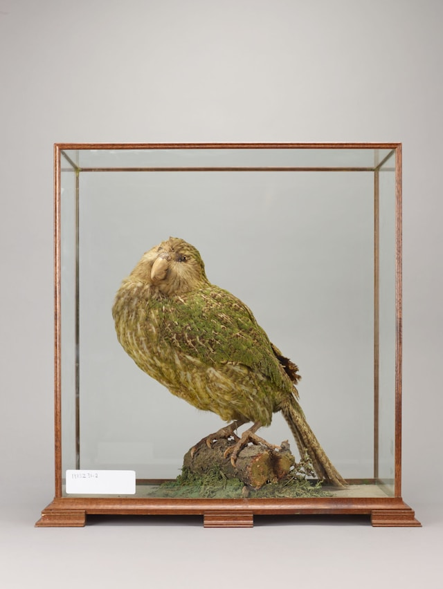

Kakapo
This is a big kakapo Bird. The kakapo, also known as the owl parrot, is a species of large, flightless, nocturnal parrot endemic to New Zealand. It is critically endangered, with only about 200 individuals remaining. The kakapo is known for its distinctive, musky odor and its unique mating call, which can be heard up to 5 kilometers away. Despite its inability to fly, the kakapo is an excellent climber and uses its wings for balance and to break its fall when leaping from trees.